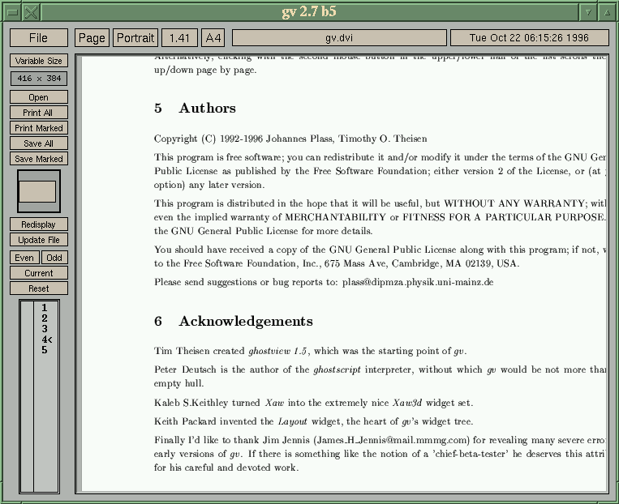

![[ TABLE OF CONTENTS ]](../gx/indexnew.gif)
![[ FRONT PAGE ]](../gx/homenew.gif)


I imagine that most Linux users have tried more than one distribution at one time or another. I've tried several, and after configuring a new installation to my liking and learning its idiosyncrasies I'm reminded that Linux is... Linux! Distributions make installation and package management easier, but once you're up and running the differences aren't really noticeable.
These days what I find interesting about distributions is the choice of software packages to be found in them. You would think that all of the distributions would offer the same software; after all, it's mostly freely available stuff from the 'net, available to anyone. There is a core group of applications which nearly all distributions provide, useful and high-quality packages such as XV, XFree86, and Ghostscript. But there is quite a variance when you get down to the smaller, less basic and less necessary packages. Every distribution I've tried has contained software which none of the others had included.
Recently I've been using the Debian distribution. While installing packages I came across something called "GV", which seemed to be some sort of Postscript viewer. I installed it and learned that this viewer was developed using Ghostview as a base, but it's much easier to use. Unlike Ghostview, GV can also display PDF files.
Due to the fact that most computer monitors are wider horizontally than vertically it's not feasible to read a standard page of a document and see the entire height of the page at once. GV deals with this by showing a small rendition of the viewing window to the left of the page and highlighting the visible portion. Clicking the left mouse button anywhere on the displayed page and dragging it smoothly scrolls the page up and down, while the miniature schematic rendition window shows you where you are on the page. If your window is too narrow to display the full width the mouse can scroll left-to-right as well.
Here's a screenshot of GV displaying a page
of the included Postscript documentation:

One of GV's optional features (it can be toggled from the menubar) is aliased fonts. When this is turned on font characters are displayed very crisply.
Ghostview has traditionally been supplied as the default Postscript file viewer. I've found it to be awkward to use; it seems when I have the magnification adjusted so that the print is legible, the window is so large that it is difficult to navigate around the document. GV deals with this problem (which I imagine has affected anyone with a monitor smaller than 21"!) in a nicely intuitive way.
GV is a good example of the dynamics of the free software movement. Several years ago Timothy Thieson wrote the Ghostview program; it was a good program in its time, but has been static for some time now. After all, writing a piece of free software doesn't necessarily entail revising and updating it forever! But the source was still available and eventually Johannes Plass adopted it, with GV as the result. Then the program came to the attention of Helmut Geyer and he made a Debian package of GV, bringing the software to a new group of users. Developers don't have to re-invent the wheel, as there is probably code archived somewhere which will provide a head-start on any sort of application.
GV can be obtained in source form from this German FTP site. I believe the Xaw3d widget set is required in order to compile the source. The Debian version can be FTP'ed from the main Debian site or one of its mirrors.